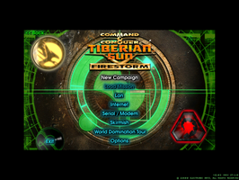
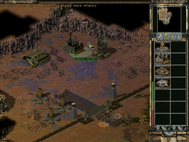
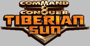

Command & Conquer - Tiberian Sun + Firestorm
Dieser Artikel wurde für die folgenden Ubuntu-Versionen getestet:
Ubuntu 14.04 Trusty Tahr
Zum Verständnis dieses Artikels sind folgende Seiten hilfreich:
Tiberian Sun ist ein 1999 für Windows veröffentlichtes Echtzeit-Strategiespiel aus der Computerspielreihe Command & Conquer der Westwood Studios. Es setzt die Handlung von Command & Conquer: Der Tiberiumkonflikt fort. In Tiberian Sun, das im Jahr 2030 spielt, kann man wieder zwischen der Bruderschaft von Nod und der GDI wählen. Im Gegensatz zu den Vorgängerspielen ist der Spielercharakter diesmal jedoch kein namenloser Kommandant, sondern wird durch einen Schauspieler verkörpert.
Seit Februar 2010 ist das Spiel kostenlos im Internet erhältlich. Die Unterstützung für das betagte Spiel wurde vom Hersteller größtenteils eingestellt. Ein Gemeinschaftsprojekt namens CnCNet  führt ehrenamtlich die Produktpflege weiter und stellt Server für den Mehrspielermodus zur Verfügung.
führt ehrenamtlich die Produktpflege weiter und stellt Server für den Mehrspielermodus zur Verfügung.
|  |
| Menü der Firestorm Erweiterung |
|  |
| Spielszene aus dem Basisspiel |
Installation¶
Hinweis!
Fremdpakete können das System gefährden.
Das Paket cncnet_1.0_all.deb  kann heruntergeladen und installiert [2] werden. Im Anschluss wird automatisch das .NET Framework für den CnCNet Klienten nachinstalliert. Das Spiel selbst wird durch Wine lauffähig.
kann heruntergeladen und installiert [2] werden. Im Anschluss wird automatisch das .NET Framework für den CnCNet Klienten nachinstalliert. Das Spiel selbst wird durch Wine lauffähig.
Bedienung¶
Mit Klick auf den CnCNet Menüeintrag [3] erscheint zunächst ein Chatfenster in dem man sich mit möglichen Mitspielern unterhalten kann. Von hier aus können über ein Lobby-Menü Spiele verabredet und gestartet werden.
Problembehebung¶
Freie Grafiktreiber¶
Bei Verwendung der freien Grafiktreiber radeon oder nouveau für Grafikkarten vom AMD/Nvidia kann es vorkommen, dass die Animationen nur laufen, wenn man den Mauszeiger bewegt (WineHQ Bugreport). Als Lösung sollte der jeweilige proprietäre Treiber verwendet werden.

Infobox¶
| Command & Conquer: Tiberian Sun | |
| Genre: | Echtzeitstrategie |
| Sprache: | |
| Veröffentlichung: | 1999 |
| Entwickler: | Westwood Studios |
| Publisher: | Electronic Arts |
| Systemvoraussetzungen: | 166-MHz-CPU, 32 MB RAM, 200 MB Festplatte, 2-MB-Grafikkarte, 56k Modem |
| Medien: | CD-Image / CD-ROM |
| Strichcode / EAN / GTIN: | - |
| Läuft mit: | wineportlib |

- Erstellt mit Inyoka
-
 2004 – 2017 ubuntuusers.de • Einige Rechte vorbehalten
2004 – 2017 ubuntuusers.de • Einige Rechte vorbehalten
Lizenz • Kontakt • Datenschutz • Impressum • Serverstatus -
Serverhousing gespendet von